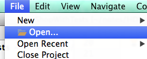
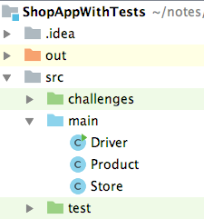
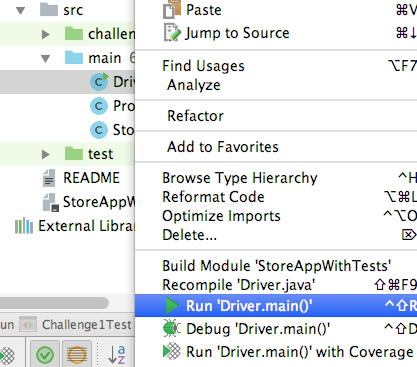
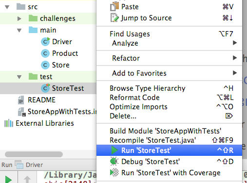
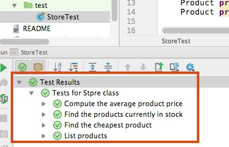
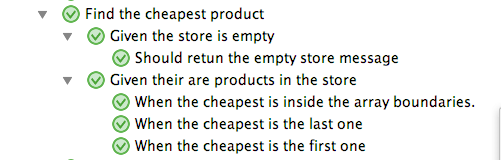
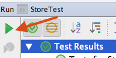
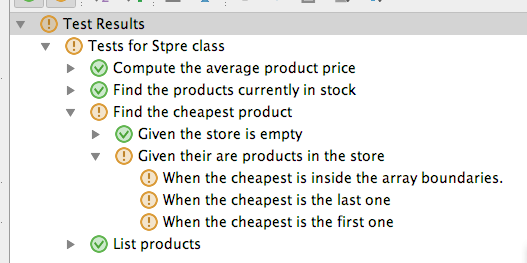
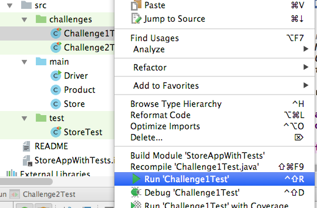

The material covered in this 'lab' is a prerequisite for the third assignment in this module.
Suppose you are part of a team developing a large application. You are given the specifications for a particular class from the overall application and asked to implement it. The specification details the fields and methods required. Each method's signature and objective are included, however, the class has no user interaction aspect.
For example, suppose you were tasked with implementing the Store class (only) from the Shop application (covered in previous labs), but the Driver class was not part of the overall application. The problem is how do you know if your implementation works? You need to develop an associated piece of code that exercises your class. We call this code a unit test, where the application class is the 'unit' being tested. Because this scenario arises frequently, special Java libraries have evolved specifically for developing and executing unit testing code (just like Processing evolved for developing and executing animations). JUnit is the most popular of these libraries. In a later nodule on this course you will practice writing unit tests. The purpose of this lab is to experience using test code given to you and being able to interpret what it tells you about the state of the application class being developed - is it behaving as specified.
[ In the third assignment for this module unit tests will be provide for a class(s) that you will be required to implement - more details later.]
Download and unzip this archive. It's an IntelliJ project containing the source code for the Shop application and supporting unit test code for the Store class. The project base folder is called ShopWithTests. To import it into your IntelliJ environment, drop-down the File menu, select Open ..., as follows:

Navigate to the base folder (ShopWithTests) and click Open.
Now expand the project's src folder:

The application code is inside a sub-folder called main. The test sub-folder has test code - ignore this for the moment. Run the application (the Driver class) as you did previously.

The application should work as before. Briefly review the code to refresh your understanding of its workings.
The purpose of this lab is to enable you understand the output generated by the test code. The test code syntax can be completely ignored - you will cover this in a later module.
In the src/test folder we typically have one unit test file per application class. The are a few exceptions to this guideline:
Therefore, the Shop application only needs one unit test file, for the Store class. It's best practice to name a test file according to the class it is testing, e.g. StoreTest. We refer to the application class as the target of the test code file.
The StoreTest file actually contains Java code that is runnable (see later). While we do not need to examine this code, some test coding principles are worth noting:
Based on these principles, the following methods of the Store class should be tested:
It is not necessary to test the public void add(Product product) method as it is trivial.
Consider the listProducts() target method. What scenarios do we need to consider when testing it? Their are two:
The purpose of the tests is to ensure the method behaves as expected for all scenarios. This usually means does it return the correct result. The first scenario above is termed a boundary case - also know as exceptional or edge case. The second scenario above is termed the normal case.
The same scenarios apply to many of the other methods of the Store class, coincidently. For the cheapestProduct() method the scenarios to consider would include:
A well designed unit test is one that deals with all scenarios of the target class's behavior. While you will not be developing test code, it is worth having an understanding of the 'Given-When-Then' design pattern for designing test code:
GIVEN a precondition(s)
WHEN the target method is called with a particular
set of parameters
THEN it should return a particular resultFoe example, applying this pattern to the listProducts() method:
GIVEN the array of products is empty
WHEN (not relevant as their are no arguments)
THEN it should return the 'No products' message stringFor the cheapestProduct() method we might have:
GIVEN the array has entries and the cheapest is the last one
WHEN (not relevant as their are no arguments)
THEN it should return the name of the last product
GIVEN the array has entries and the cheapest is the third one
WHEN
THEN it should return the name of the third productWe will see evidence of this GIVEN-WHEN-THEN pattern in the output generated by the Store tests (next section).
To run the Store tests follow the screen-shot below:

The output generated looks as follows (you may need to collapse some of the output branches, by double-clicking them, to see this exact output):

The top branch (labeled 'Test Results') has a green tick on the left-hand side meaning all the tests passed. There is only one sub-branch ('Tests for Store class') because we have only one application class to test. The next level pf nesting has four sub-branches, one for each public method of the target that needs testing.
To expand a branch you double-click it. Expand the 'Find the cheapest product' branch all the way so that it looks as follows:

Notice the labels on the various sub-branches. They match the different scenarios mentioned in the previous section and use the GIVEN-WHEN-THEN(Should) language for clarity. It suggests the tests have covered all the scenarios and are therefore well-designed.
Lets cause a test to fail by intensionally adding a bug to the target code. In the Store class (src/main folder) change the condition statement of the cheapestProduct) method from: .
if (product.getUnitCost() < cheapestProduct.getUnitCost())to
if (product.getUnitCost() > cheapestProduct.getUnitCost())Re-run the tests by clicking the button provided (or use the keyboard shortcut cmd+R (ctrl+F5 for Windows/Linux)):

An exclamation mark (!) now precedes the tests that have failed.

When a particular scenario test fails its 'parent' branch is also registered as a failure, e.g. 'Find the cheapest product' branch is recorded as failed due to one of its subordinates failing. This pattern travels all the way to the top of the test branch hierarchy.
According to its specification, the cheapestProduct) method fails when the product name it returns is not the cheapest one in the array. How do we implement test code so that it knows what product name should be returned? The test code simply adds a set of products to the Store (via the add()method), calls cheapestProduct), and then compares the method's actual response to what it expected. If they are different it registers the test scenario as a failure. The test code developer chooses the product details to add to the Store and knows what the method should return. The test code executer (you) doesn't really need to know the product details, only whether the test passed/failed.
Undo the code change above to return to all the tests passing again.
Often in a development team the person asked to implement some application code does NOT write the associated testing code. This safeguards against the app developer assuming their code will work and cutting corners when writing the tests to prove it.
You are required to implement the following method specification for the Store class:
public double totalValue() - Compute the total value of all
products in the store. Only products that are 'in the current
product line' should be included in the calculation. The method
should return 0.0 when no product in the array is 'in the current
product line' or when the array is empty. Although you are not writing the test code, some of the scenarios relevant here are:
GIVEN the array of products is not empty but all entries
have inCurrentProductLine set to false
WHEN
THEN it should return 0.0
GIVEN the array of products is not empty and some entries have
have inCurrentProductLine set to true
WHEN
THEN it should return the total value of those
with inCurrentProductLine set to trueTo prove your implementation is correct, run the test file src/challenges/Challenge1Test:

All the test scenarios must pass. If any fail, try to fix the bug(s) in your implementation and re-run the tests.
You are required to implement the following method specification for the Store class:
public int addUniqueProduct(Product product) - This adds the product
argument to the Store's array provided its product code does
not clash with another product currently in the array. If their
is no clash it should return the index position of the newly
added product, otherwise it should returns -1.scenarios relevant here are:
GIVEN the array of products is not empty
WHEN the new product's code matches one already in the array
THEN it should return -1
GIVEN the array of products is not empty
WHEN the new product's code is unique
THEN it should return the index position of the new product[The empty Store scenario is really the same as the second scenario above.]
To prove your implementation is correct, run the test file src/challenges/Challenge2Test. All the test scenarios must pass.